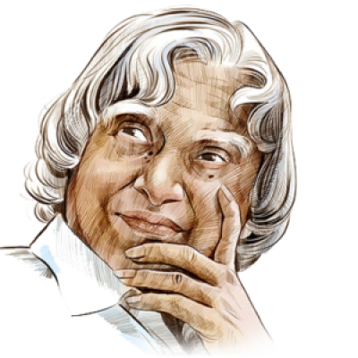

APJ ABDUL KALAM
15 October 1931 – 27 July 2015
Missile Man of India
Avul Pakir Jainulabdeen Abdul Kalam was an Indian
aerospace scientist who served as the 11th president of India from 2002 to 2007. He was born and
raised in Rameswaram, Tamil Nadu and studied physics and aerospace engineering. He spent the next four
decades
as a scientist and science administrator, mainly at the Defence Research and Development Organisation (DRDO)
and
Indian Space Research.

Doctor APJ ABDUL KALAM
Some of the Important Points about Him
- When Dr. Kalam was 10, he distributed newspapers in his hometown of Rameswaram, Tamil Nadu due to
poverty at home. He graduated from Madras Institute of Technology in aeronautical engineering. Then, he
worked with DRDO (Defence Research and Development Organisation). He had also designed helicopters for
the Indian Army.
- He never owned a television set.
- In his prolific career spanning decades, A P J Kalam held